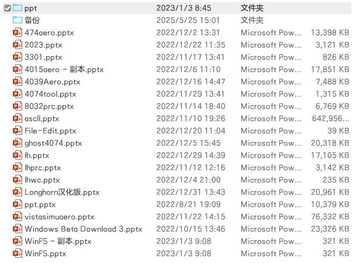
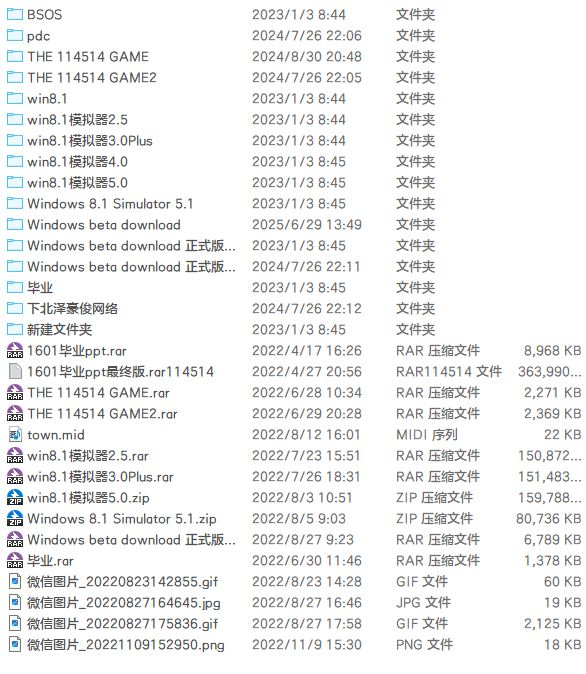
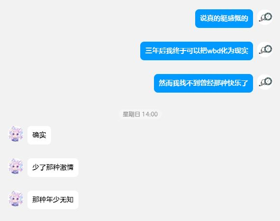

前几日，我在清理电脑上的无用文件，当我打开一个尘封已久的文件夹，我轻轻掸去上面的灰尘，一些美好的回忆浮上心头
 我仍记得几年前我在一台老式的电脑上，用PowerPoint描绘我理想中的“软件”
如今，以我的技术水平，完全可以将Windows Beta Download化为现实，然而就连WBD这个名字我都差点忘却
我在初中三年似乎变化了许多，我不再喜欢PPT制作，也不再喜欢汉化beta系统。或许，成长就是这样，我也开始思考什么是有意义的，开始变成无趣的大人了
正如@AbCd所言：
